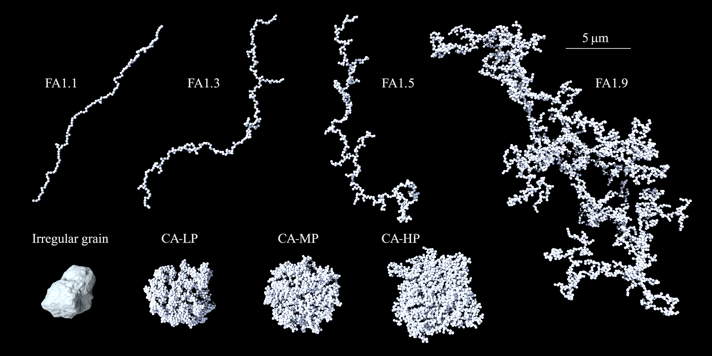

Dust models
Summary of dust models and their properties
Shape models
We consider seven types of dust aggregates and one type of solid irregular grains, as shown in the image below.
In AggScatVIR, each particle shape can be called by a command listed below:
cmd |
Meaning |
|---|---|
|
Fractal aggregates with \(D_\mathrm{f}=1.1,~k_\mathrm{f}=1.7\) |
|
Fractal aggregates with \(D_\mathrm{f}=1.3,~k_\mathrm{f}=1.5\) |
|
Fractal aggregates with \(D_\mathrm{f}=1.5,~k_\mathrm{f}=1.4\) |
|
Fractal aggregates with \(D_\mathrm{f}=1.9\) (also known as BCCA) |
|
Compact aggregates with a high porosity (also known as BPCA) |
|
Compact aggregates with a moderate porosity (also known as BAM1) |
|
Compact aggregates with a low porosity (also known as BAM2) |
|
Irregular compact grains (also known as GRS) |
Size and Porosity
Table 1 summarizes the volume-equivalent radius and the characteristic radius of aggregates (normalized to the monomer radius) provided in AggScatVIR (see Appendix A: Definitions for the detailed definitions of these quantities).

The monomer radius and the number of monomers used in AggScatVIR are summarized in Table 2.

Composition
We consider two sets of dust composition. Please refer to Tazaki & Dominik (2022) for a detailed description. The following command can call each.
cmd |
dust composition |
|---|---|
|
pyroxene (Mg0.7Fe0.3SiO3), water ice, troilite, organics |
|
pyroxene (Mg0.7Fe0.3SiO3), water ice, troilite, amorphous carbon |
The refractive index of each dust composition is as follows.

How to read file names?
For aggregates
The name of each dust model obeys:
dustkapscatmat_TYPE_AGGSIZE_MONOSIZE_MONOCOMP.inp
where TYPE specifices a type of particle shape, AGGSIZE is the aggregate size, MONOSIZE is the monomer radius in unit of nm, and MONOCOMP is the dust composition. For example:
dustkapscatmat_FA19_4096_100nm_amc.inp
Fractal aggregates with \(D_\mathrm{f}=1.9\) consisting of 4096 monomers; each monomer has a radius of 100 nm and a amc composition.
AggScatVIR also offers the optical properties averaged over an aggregate-size distribution obeying
where \(a_\mathrm{min}\) and \(a_\mathrm{max}\) represent the minimum and maximum volume-equivalent radii, respectively. For the aggregates, the minimum aggregate radius is set as \(a_\mathrm{min}=2a_\mathrm{mon}\). The maximum aggregate radius is a parameter. The file name for the distribution-averaged optical properties looks like this:
dustkapscatmat_FA19_Nmax4096_100nm_amc.inp
where Nmax4096 represents that the maximum aggregate in the size distribution contains 4096 monomers.
For irregular grains
For irregular grains, the name of dust model obeys:
dustkapscatmat_grs_rvSIZEum_comp.inp
SIZE is a volume-equivalent radius of irregular grains in unit of microns.SIZE = 0_2000, 0_2520, 0_3175, 0_4000, 0_5040, 0_6350, 0_8000, 1_0079, 1_2699, 1_6000As with the case of aggregates, we also prepared the optical properties averaged over the size distribution. In this case, the file name looks like this:
dustkapscatmat_grs_rvmaxSIZEum_comp.inp